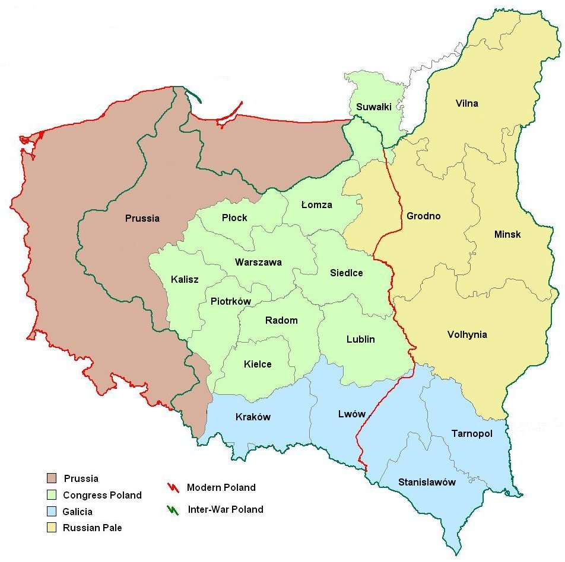

Searches of the All Poland Database can be filtered geographically. While some datasets pertain to a specific region of Poland, other datasets cover all of Poland, and cannot be filtered. These geographic regions are based primarily on the historical pre-WWI jurisdictions, as follows:
Congress Poland = "Russian Poland"
(in Polish, called Królestwo Kongresowe or Kongresówka).
The part of Poland occupied by the Russian Empire,
Province of Austro-Hungarian Empire 1772 until 1917; Belonged to Poland between the two world wars (the Polish interwar provinces of Kraków, Lwów, Tarnopol and Stanisławów). The latter three became part of Ukrainian SSR in 1945. Today, this area is in southeastern Poland and western Ukraine.
Gubernias (provinces) of the Russian Empire's "Pale of Settlement"
which were in Poland between the two world wars.
Today, these regions are primarily not in Poland:
Areas which were part of the German Empire before WWI, and
are in Poland today.
Between the two world wars, this included the Polish provinces
of Pomorze (Pomerania), Poznań (Posen) and
Śląsk (Silesia); and parts of the German provinces
of Westpreußen (West Prussia), Pommern (Pomerania),
Schlesien (Silesia), and Brandenburg.
Since WWII, this also includes the southern half of
Ostpreußen (East Prussia).
For more information about the geographic divisions of Poland,
see the JewishGen InfoFile
"
Because of overlapping political borders over time, some regions are shared with other JewishGen databases. Therefore, the same data is available in more than one JewishGen Database.